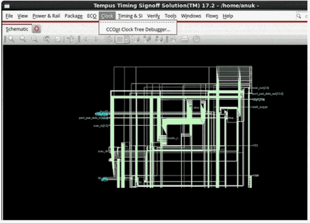
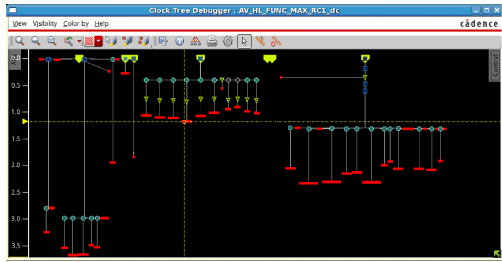

CCOpt Clock Tree Debugger
The CCOpt Clock Tree Debugger provides clock tree debugging facilities that will help you understand the quality of the CCOpt results better. The software provides the following three basic views for clock tree visualization:
- Clock Tree Debugger: Displays a top-down tree view of the CCOpt clock trees.
- Clock Path Browser: Displays the clock path data in a table and provides the option for bringing up a clock path analyzer either from its context menu or by double-clicking on a row in the table.
- Clock Path Analyzer: Provides a view to examine a single clock path.
The three views are detailed in sections below.
The CCOpt Clock Tree Debugger submenu appears only when you have created a CCOpt clock tree specification file.
Choose Clock – CCOpt Clock Tree Debugger

The Clock Tree Debugger tool displays a top-down tree view of the CCOpt clock trees with the vertical axis representing delays. It has the following features:
The tool display shows a schematic-like representation of the CCOpt clock trees. You can control the level of details and the elements that you want to view.
The results shown in the tool are based on the CCOpt clock tree specification file.
The units on the vertical scale of the display represent time, so that distance between two elements indicates delays that you can measure.
A comprehensive search mechanism lets you find instances, paths, and reconvergent clocks easily.
The tool displays several clocks at the same time. The software can display reconvergent and crossover clocks.

Return to top